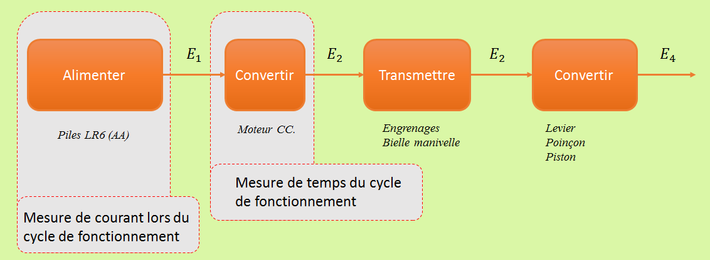
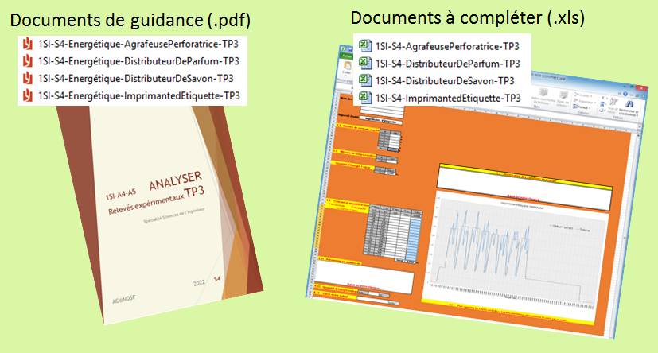

L'expérimentation proposée permet d'évaluer l'autonomie des appareils en fonction de paramètres d'usage imposés. Ces appareils sont constitués d'une chaine d'énergie similaire et leur temps d'usage est directement lié au temps d'alimentation du moteur. Pour cette raison, vous déterminerez le temps d'alimentation du moteur électrique (Mcc) et mesurerez l'intensité du courant consommée lors du cyle de fonctionnement.

Retour en haut de la page
Vous trouverez dans les resssources HTML/Documents les éléments nécessaires pour mener à bien les expérimentations.
Pour utiliser ces documents, suivre scrupuleusement la procédure suivante :